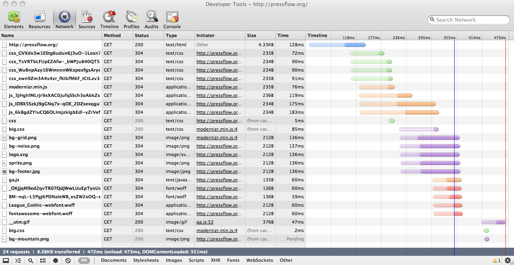
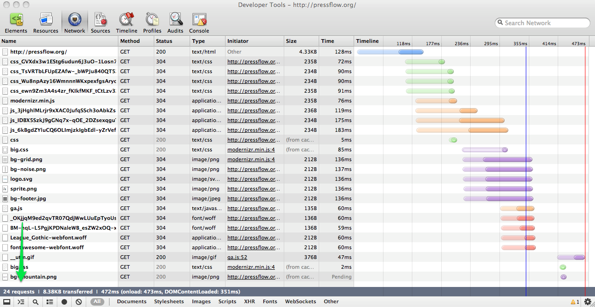
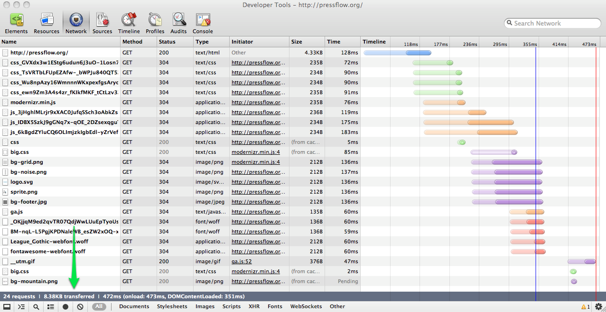
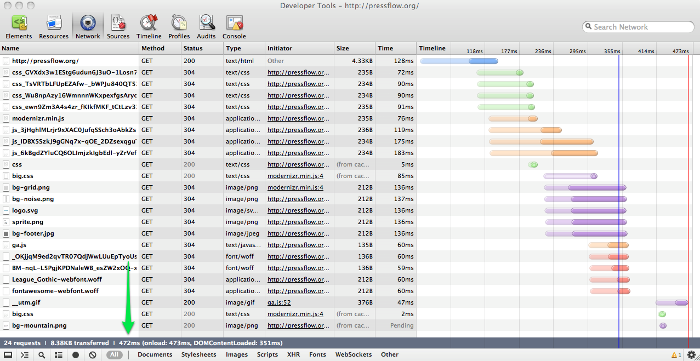
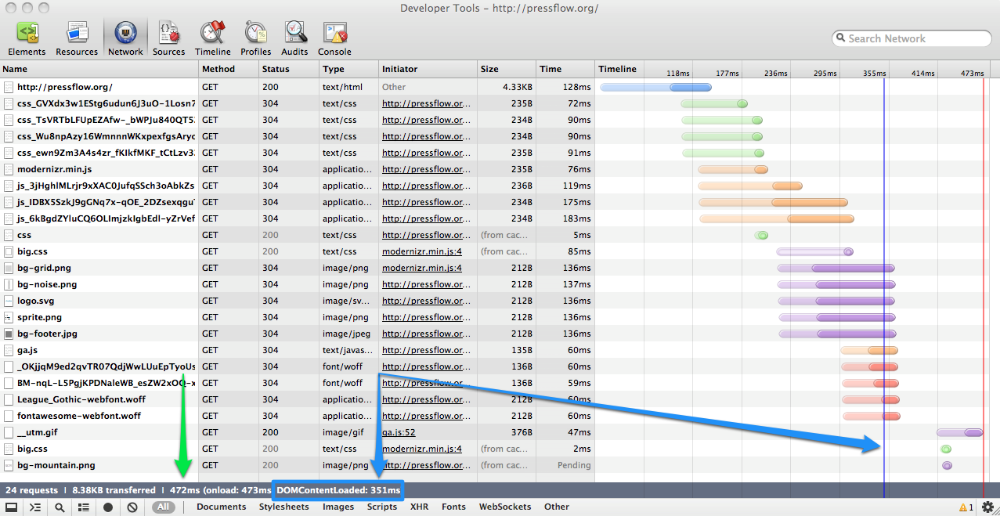

Mobile Drupal
Acquia LSD Webinar
Who am I?
Chris Ruppel
frontend developer
I do Drupal stuff sometimes:
Scaling to mobile
it's not about control
rather lack thereof
it's not about preciseness
it's about diversity and reach
it's not about flashiness
it's about speed
Embrace Responsive
Flexible
- Avoid making guesses on the server
- Make interface and content decisions
within the browser
Maintainable
- One set of costs
- One codebase
- One platform that
works everywhere
Functional
Mobile can do more than desktop
Touch,
location,
compass,
orientation,
camera,
vibration,
phone calls…
Topics
Frontend development: Help teams build/debug faster
Web Performance: Make pages load faster
Drupal-specific tools: Automate within Drupal
Frontend Development
Sass + Compass
CSS for developers
- Allows for scalable, modular
architecture (SMACSS) - Easy browser compatibility
- Powerful RWD toolsets
- Active Drupal community
Workflow
Brings structure to CSS files
Allows for truly reusable components
Reduces development collaboration issues
More maintainable codebase
Prototyping
Using production code from day 1
Leverage fluid grid systems without doing math
See the product on any device at any time
Design
Designing in the browser is more accurate
Avoids setting impossible expectations
See the design on any device at any time
Responsive web development
Simple APIs for creating complex layouts
Better compatibility options for old browsers
Live testing helps spot issues more quickly
Tools
- Sass, a CSS preprocessor
- Compass, a framework built on Sass
- Compass-normalize, a reset stylesheet
- Susy, a fluid, responsive grid system
- Breakpoint creates reusable media queries
- Respond-to makes Breakpoint better
- Singularity, an asymmetric grid system
JavaScript
Conditional loading
before we start...
let's talk about conditional loading
- Don't rely on direct loading via HTML
Load things based on JS tests:
- Browser properties
- Browser features
- User actions or preferences
SouthStreet
by Filament Group
eCSSential
Problem:
CSS is loaded when it is not needed.
Sometimes it will never be used.
It's just dead weight.
Example:
mobile phone downloading CSS with
@media (min-width: 1400px)
then it downloads your big background images
Data: http://scottjehl.github.com/CSS-Download-Tests/
Solution:
Directly load CSS that will be used.
Lazy-load CSS that might be used.
Ignore CSS that cannot be used.
Picturefill
Problem:
We need different images for different contexts.
This affects usability and page weight.
Picturefill was developed to explore responsive images before a native browser implementation emerges.
Modernizr
Problem: user-agent sniffing is error-prone;
unable to scale as more devices are created
Explanation:
user-agent sniffing is like
knowing a person's name
Modernizr tests are like
having a fingerprint
Solution: Detect individual features on each browser
Bonus: includes a conditional loader called yepnope.js
Code: http://www.modernizr.com
Conditional content
Anchor-include pattern
Conditionally load content,
provided it exists at its own self-contained URI
Third-party libraries
Consider conditional loading for optional widgets
Examples: Social widgets, sharing tools
Testing
Network waterfalls
The first step to debug load-time issues





Users start to "feel" like the webpage has loaded.
jQuery does not execute until this event has occurred.
More info
Hosted performance tools
YSlow
Grades your web pages and makes suggestions to improve your frontend performance
Available as a browser extension
Also available as a JS-based bookmarklet for use on mobile
WebPageTest.org
It won't grade your site, but it gives you the raw data that you can get from a waterfall.
Run tests from many locations worldwide
Many browsers (IE6+, FF, Chrome)
What does webpagetest.org check?
- Initial load-time
- Repeat load-times (caching)
- Waterfalls and connections
- Headers for every request
Akamai Blaze
Mobile performance testing
- Similar to webpagetest.org
- Pick which device to test
- Number of repeat loads
- Location to test from
Navigation Timing
A JavaScript API that accurately measures page loads.

Drupal Tools
What has Drupal solved?
Themes
Base theme rarely matters. However, there are themes with excellent Sass and Compass support
- Aurora 7.x-2.x - comes with a Compass extension to set subthemes up, full integration with Compass tools: Susy, Singularity, Respond-to
- Zen 7.x-5.x - includes Zen Grids, works with Susy and Respond-to, very battle-tested within Drupal
Modules
Modernizr 7.x-3.0
Problem: sometimes it's hard to keep track of what Modernizr tests your Drupal site needs.
Another problem: themes and modules need to consitionally load things based on said tests.
Modernizr API
Available to all themes and modules.
- Drush commands
- Libraries API integration
- Modernizr.load() integration
Code: http://drupal.org/project/modernizr
Disclosure: I maintain this Drupal module.
Speedy
Problem: most JS within Drupal core is not minified.
Solution: Minify files to make them smaller and decrease download time.
Picturefill
D7 - Module available at http://drupal.org/project/resp_img
D8 - Core implementation has been committed!
http://drupal.org/node/1775530
Drupal 8 efforts have helped influence the formation of this web standard
Navigation Timing
Integrates navigation timing into any Drupal site.
Needs a UI, but provides all the data you need
Questions?
Contact me:
chris ❀ fourkitchens.com